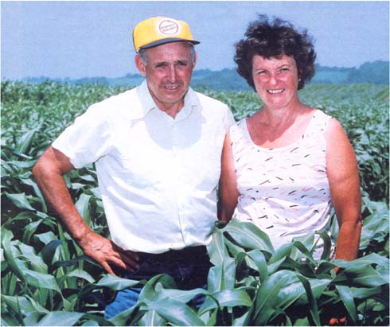

The two ears of corn shown above were both grown in 1981. The corn on the left came from Ralph's and Rita's organic fields, while the ear on the right was picked from a nearby chemicalized cornfield. The difference in the keeping value, two seasons later, is obvious.